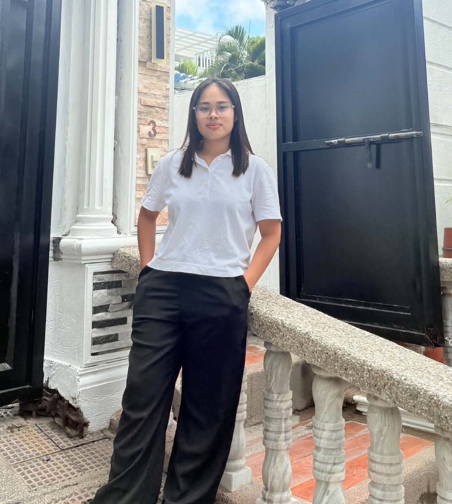

I am interested in web development, user interface design, database management, system development, and computer networking. I enjoy learning technologies that allow me to build practical and user-friendly solutions.
Open to Learning & Building Open for OJT / Internship
Hello, I’m
BS Information Technology Student
BSIT Student · Aspiring Web & Systems Developer
I’m a Bachelor of Science in Information Technology student at La Consolacion College Tanauan. I enjoy building websites, developing practical systems, working with databases, exploring networking, and turning ideas into useful digital solutions.
HTML5PHPMySQLCiscoJavaScript
- Web Development
- Database Systems
- Networking
Open for OJT · InternshipTanauan, Batangas · -- local time
8ProjectsAcademic and personal systems built through hands-on learning.
8CertificatesLearning milestones covering web development and networking.
7+Core areasDevelopment, databases, networking, systems, and technology exploration.
∞GrowthContinuously learning and improving through projects and practice.
About
A little about myself

Hello! I am Jena Benisse Redondo, currently taking Bachelor of Science in Information Technology at La Consolacion College Tanauan. A motivated and detail-oriented individual with a strong interest in technology and developing practical solutions.
Through my academic projects, I have gained experience with HTML, CSS, JavaScript, PHP, MySQL, and CRUD-based systems. I have also completed networking courses covering network communication, addressing, device configuration, troubleshooting, and network support.
I also had the opportunity to attend a robotics workshop, which allowed me to explore robotics and technology beyond regular web and database development. I am still continuing to learn and explore this area as part of my growth as an IT student.
My goal is to continuously improve my technical skills, gain more hands-on experience, and create digital solutions that are useful, reliable, and easy to understand — while contributing positively to a professional work environment.
- Communication
- Teamwork
- Problem-Solving
- Time Management
- Adaptability
- Attention to Detail
- Curious LearnerAlways exploring new technologies
- Hands-on BuilderLearning through real projects
- Continuous GrowthImproving one skill at a time
Field notes from Jena
- Name
- Jena Benisse Redondo
- Role
- BSIT student · aspiring web & systems developer
- School
- La Consolacion College Tanauan
- Skills
- HTML · CSS · JavaScript · PHP · MySQL · Networking · UI/UX
- Exploring
- Networking · Robotics
- Open to
- Learning & building — internships, collaborations, projects
“Let’s build something useful.”
Right now
- Studying3rd Year, 1st Semester — BSIT
- BuildingWeb systems & database apps
- ExploringNetworking & robotics
- Based inTanauan City, Batangas
Personal interests
Beyond the code.
- Listening to Music
- Watching Movies
- Playing Games
- Browsing the Internet
Education
Learning journey
My journey continues through education, hands-on projects, certifications, and continuous technical exploration.
Current education
Bachelor of Science in Information Technology — La Consolacion College Tanauan (2024 – Present). Academic learning focused on programming, web development, databases, networking, system development, and practical technology applications.
- Programming
- Databases
- Networking
- Web Development
A look at the coursework I have completed across four semesters, and the subjects I am currently taking in 3rd Year, 1st Semester.
Skills
My skills
Core technology stack — select a cluster or a node to explore.
01 / 08
Credential vault
Certifications & learning
A collection of completed learning milestones reflecting my growing knowledge in web development, networking, system development, and technology. Select a credential to preview it, open the full document, or download your own copy.
No certificate matches that search. Try Cisco, IPv6, or robotics.
01
01 / 08
Achievements & experience
Experience, workshops & work mode
Where I have applied what I learn — and how I work.
-
- Assisted with IT-related tasks and developed simple applications, including an Employee Monitoring Board, Payroll Calculator, and BMI Calculator.
- Collaborated with team members to complete assigned projects.
Work ImmersionApplications
-
Certificate of Participation for a robotics workshop presented by First Eduspec Inc. in partnership with La Consolacion College Tanauan during LCCT ICT Week 2026. The workshop introduced hands-on robotics concepts, giving students the chance to explore robotics design and building beyond regular web and database coursework.
RoboticsHands-on WorkshopICT Week 2026
-
Certificate of Participation for the seminar held in celebration of IT Week 2026 at La Consolacion College Tanauan. The seminar explored how business processes and emerging technology intersect, encouraging IT students to connect technical skills with real-world business needs.
IT Week 2026Business & TechnologySeminar
Responsive Websites
Clean and responsive web interfaces designed to work across different screen sizes and devices.
HTML · CSS · JavaScriptWeb-Based Systems
Practical systems for organizing information, managing processes, and supporting everyday operations.
PHP · CRUD · SystemsDatabase Applications
Database-driven applications that organize, store, retrieve, and manage application information.
MySQL · PHP · CRUDPractical Systems
Information, POS, inventory, and reservation systems developed as hands-on learning projects.
Systems · Databases · UIHow I work
A simple, clear process so every project stays on track and easy to follow.
Listen to the goal, the users, and what the system or website needs to do.
Ready for OJT
I’m looking for an on-the-job training opportunity where I can apply what I’ve learned, contribute to real work, and keep growing alongside a professional team.
Web Development
Build and maintain responsive pages and interfaces using HTML, CSS, and JavaScript.
Systems & Databases
Develop PHP and MySQL CRUD systems — from database structure to a clean, usable interface.
Networking & IT Support
Basic configuration, troubleshooting, and support, backed by Cisco Networking Academy training.
Teamwork & Reliability
Communication, time management, and attention to detail — with prior work immersion at Creotec Inc.
Looking for an OJT intern? Let’s talk.
Send me an email or give me a call — I’d love to hear about your team and how I can help.
Curriculum Vitae
Curriculum Vitae
Everything on this site — education, work immersion, skills, projects with live demos, and certifications — on a single, printable page.
- 01IT Department Work Immersion — Creotec Inc.
- 02Knowledge Dash & 8 Sibs Sari-Sari Store POS System
- 03Web, database, networking & UI/UX skills
- 048 certifications from Cisco Networking Academy & LCCT
Page 1 of 1 · PDF · click to open
Contact portal
Have a project, opportunity, or idea? Let’s connect.
I’m open to learning, collaborating, discussing ideas, and connecting with people interested in technology. Interested in my work? Send me an email.
Currently focused on learning, building, and growing in IT.
- Websites
- Web-based systems
- Database apps
- OJT / Internship
- Internships
- Collaborations
LocationSulpoc, Tanauan City, Batangas, Philippines
LinkedIn · Professional presence
Jena Benisse Redondo
BS Information Technology student at La Consolacion College Tanauan — open for OJT and internship opportunities. Let’s connect professionally.
linkedin.com/in/jena-benisse-redondo-267106449The things recruiters and clients usually want to know — all in one place.
No question matches that search. Try OJT, stack, or certificates.
Are you open for OJT or an internship?
Yes. I’m open for OJT / internship opportunities and happy to talk about how I can contribute to your team. The fastest way to reach me is by email or phone.
What can you build?
Responsive websites, PHP and MySQL web-based systems, database applications, and practical systems such as POS, inventory, information, and reservation systems.
What is your tech stack?
HTML, CSS, JavaScript, PHP, and MySQL, plus networking knowledge from Cisco Networking Academy, UI/UX design, and the Microsoft Office Suite.
Do you have any work experience?
I completed an IT Department work immersion at Creotec Inc. in July 2023, where I assisted with IT tasks and developed an Employee Monitoring Board, Payroll Calculator, and BMI Calculator.
Where are you based?
Sulpoc, Tanauan City, Batangas, Philippines. I’m studying BS Information Technology at La Consolacion College Tanauan.
Can I see your certificates and curriculum vitae?
Of course — all 8 certificates can be viewed or downloaded in the Certificates section, and my Curriculum Vitae is available as a PDF in the Curriculum Vitae section.
Jena Benisse Redondo · BS Information Technology Student • La Consolacion College Tanauan
© 2026 Jena Benisse Redondo. All Rights Reserved.